単元4: 情報の技術
現代の生活に欠かせない「情報の技術」について整理します。コンピュータの仕組み（5大装置）、ネットワークの基本（IPアドレスやプロトコル）、プログラムの基本処理構造、セキュリティ対策、知的財産権、そして自動運転やエアコン等に使われる「計測・制御システム」の要点をマスターしましょう！
1. コンピュータの構成と情報の表し方
ハードウェアとソフトウェアが連携してコンピュータは動きます。
① コンピュータの5大装置とCPU
- ハードウェア：PC本体や周辺機器などの物理的な機器。
- ソフトウェア：OSやアプリなどのプログラム。
- 5大装置：コンピュータを構成する5つの基本装置。
- 入力装置：キーボード、マウス、マイクなど。外部から情報を読み取る装置。
- 出力装置：ディスプレイ、プリンタ、スピーカーなど。
- 記憶装置：メインメモリ（主記憶）、ハードディスクやSSD（補助記憶）など。データを保存しておく装置。
- 演算装置：データの計算や処理を行う装置。
- 制御装置：各装置へ指示を出し、動作をコントロールする装置。
- CPU（中央処理装置）：制御装置と演算装置を一体化したコンピュータの「頭脳」にあたるLSIチップ。
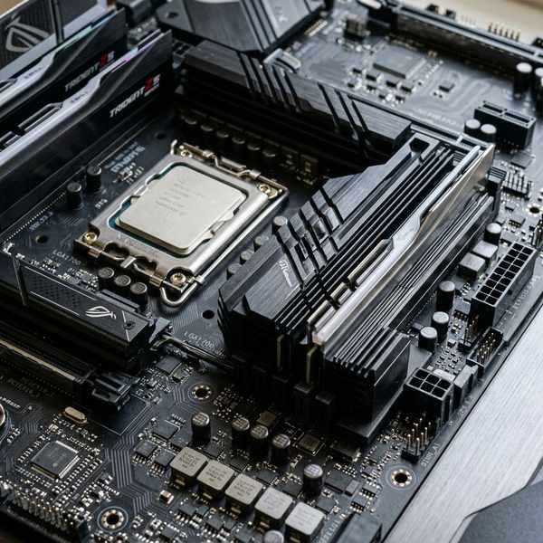
目に見える機器「ハードウェア」
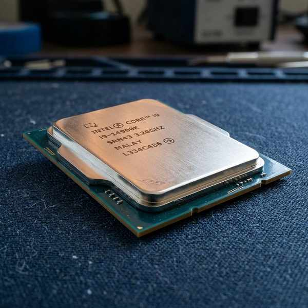
演算と制御を行う「CPU」
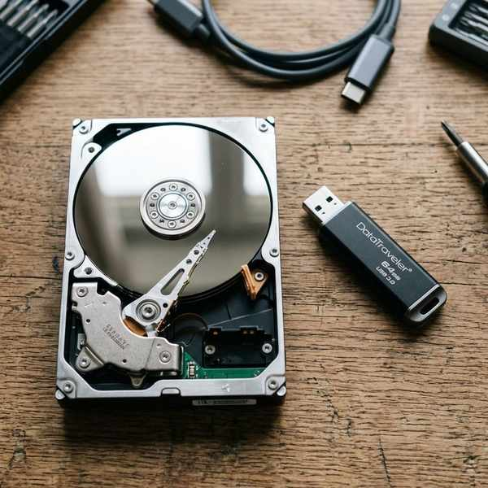
データを蓄える「記憶装置」
② 情報の表し方と量
- アナログ情報：温度や音の大きさのように、切れ目のない連続的な量で表される情報。
- デジタル情報：数字のように、0と1の組み合わせなど離散的な数値で表される情報。
- 情報の単位：
- bit（ビット）：情報の最小単位（0か1かの1桁）。
- Byte（バイト）：1B = 8bit。
- 1KB（キロバイト）：1024B（※コンピュータが2進数で処理するため、1000ではなく1024倍になります）。
- 解像度（かいぞうど）：画像のきめの細かさを表す数値。高いほど画像は細かく滑らかになります。
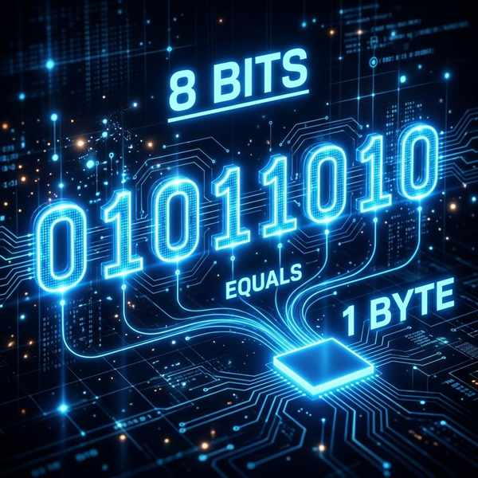
情報量の関係「1Byte ＝ 8bit」
切れ目のない連続的な「アナログ情報」
2. ネットワークとインターネット
① ネットワークの基本用語
- LAN（ラン）：学校や家庭内など、限られた狭い範囲で情報機器同士をつないだ高速ネットワーク。
- サーバ：ネットワーク上で他のPC（クライアント）へファイルなどのサービスを提供するコンピュータ。
- IPアドレス：インターネット上で、接続された情報機器1台1台に割り当てられる通信のための識別番号（住所）。
- 通信プロトコル：インターネット上でデータをやり取りするための約束事（共通ルール）（例：TCP/IP）。
- URL：Webページのネット上の住所（https://...で始まる文字列）。
- ドメイン名：URLの中の「bunri.co.jp」などのように、IPアドレスに対応して付けられた人間が覚えやすい組織名等の名前。
- パケット通信：データを細かく分割（パケット＝小包）して送受信する仕組み。回線を効率よく共有できます。
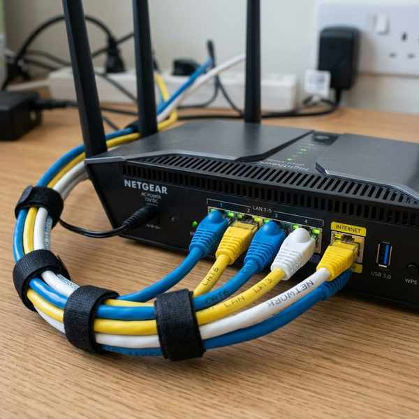
狭い範囲をつなぐ「LAN（ラン）」
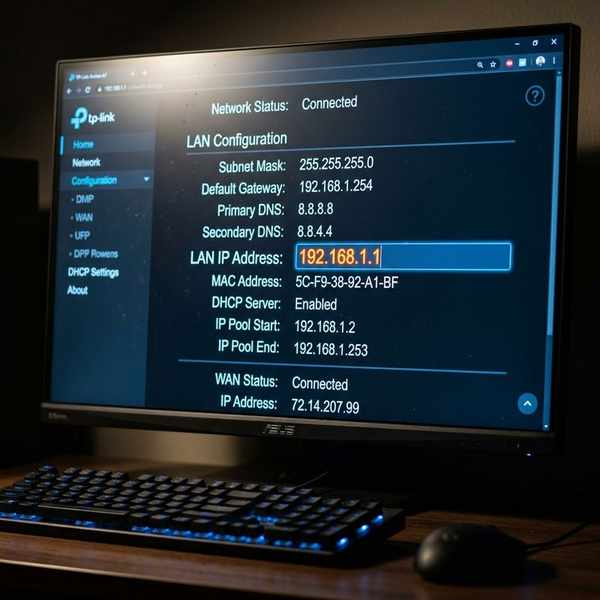
ネット上の住所にあたる「IPアドレス」
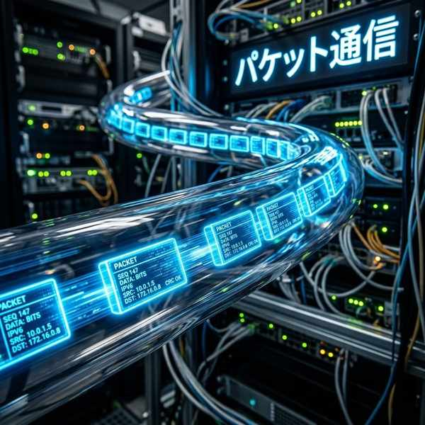
データを細かく分ける「パケット通信」
3. プログラミングとアルゴリズム
① 双方向性のあるコンテンツ
- 双方向性（そうほうこうせい）：使用者の操作（入力）に応じて、表示が変わるなどの応答（出力）をするコンテンツ（例：オンラインチャット、学習アプリ）。
② アルゴリズム（考え方・手順）と3つの基本構造
プログラムが情報を処理する手順や考え方をアルゴリズムといい、どんな複雑なプログラムも次の3つの基本構造の組み合わせで出来ています。
- 順次（じゅんじ）処理：上から下へ順番に処理する構造。
- 分岐（ぶんき）処理：条件によって処理を分ける構造（例：「もし〜ならA、そうでなければB」）。
- 反復（はんぷく）処理：条件を満たすまで処理を繰り返す構造。
- フローチャート（流れ図）：四角やひし形などの記号を矢印で結び、プログラムの流れを図式化したもの。
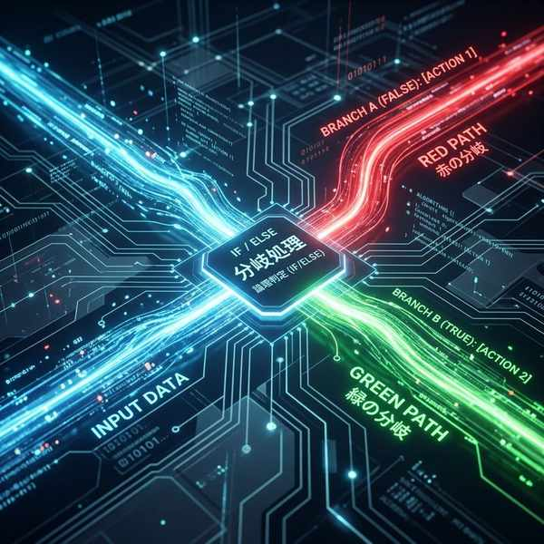
条件で分ける「分岐処理」
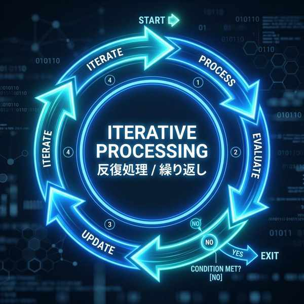
同じ作業をループする「反復処理」
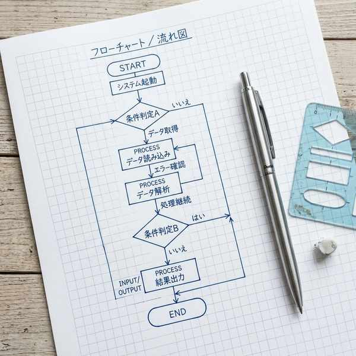
ひし形などで条件を示す「フローチャート」
③ 制作手順とデバッグ
- 制作手順：問題の発見 ➔ 課題の設定 ➔ 解決策の構想 ➔ 設計・制作 ➔ 評価 の順に進めます。
- デバッグ：プログラムの不具合（バグ）を発見し、修正する作業。
4. セキュリティと知的財産権
① 情報セキュリティ対策
- 認証システム：IDとパスワード、生体認証（指紋など）を用いて本人確認をし、不正アクセスを防ぐ仕組み。
- ファイアウォール（防火壁）：外部ネットワークからの不正な通信を監視・遮断するシステム。
- フィルタリング：有害なWebページや違法な情報の閲覧を制限する仕組み。
- 暗号化（あんごうか）：通信中のデータを他人に読み取られないよう、規則的な文字や記号へ変換する技術。
- バックアップ：データの破損に備え、別の記憶装置にデータをコピーしておくこと。
- フィッシング詐欺：偽のメール等で本物のサイトになりすまし、パスワードなどの個人情報を盗む詐欺。
- 情報モラル：情報社会で適切に活動するための基本的な考え方や態度。
不正侵入を防ぐ「ファイアウォール」
有害サイトをブロックする「フィルタリング」
データを読み取れなくする「暗号化」
② 知的財産権（ちてきざいさんけん）
- 著作権（ちょさくけん）：小説・音楽・絵画・プログラムなど、創作した作品（著作物）を保護する権利。創作時に自動的に発生します。
- 産業財産権（さんぎょうざいさんけん）：新しい発明（特許権）やデザイン（意匠権）、商品のマーク（商標権）などを保護する権利。特許庁への出願・登録が必要です。
コピーや無断転載を防ぐ「著作権」
5. 計測・制御システム
身の回りの自動機器（エアコン、自動炊飯器など）は、以下の3つの要素で構成されています。
- センサ：温度、明るさ、音などの周囲の状況を計測して電気信号にする部品。
- アクチュエータ：モータを回したり、熱を出したりして、エネルギーを機械的な動き（仕事）に変換する部品。
- インタフェース：アナログのセンサ信号とデジタルのコンピュータなど、性質の異なる機器間で情報のやり取りができるように仲介する（A/D変換等）部分。
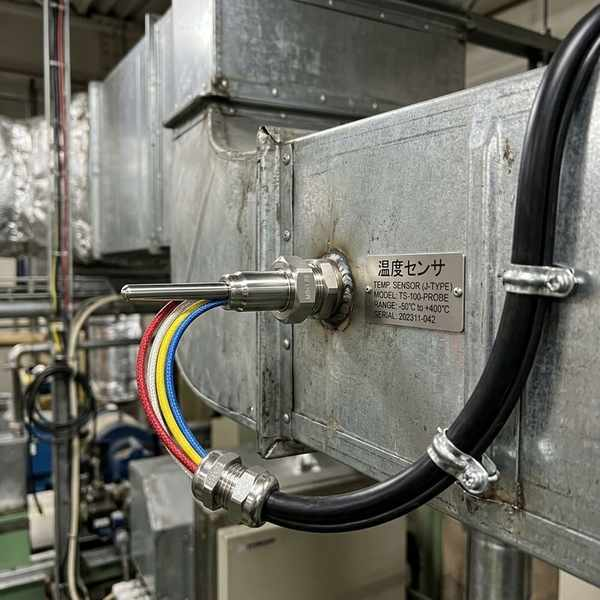
状況を測る「センサ（エアコンの例）」
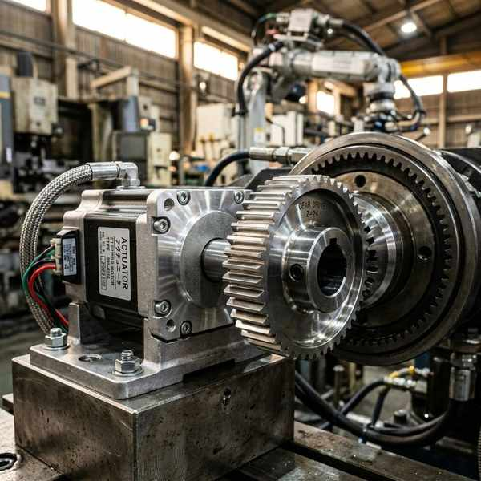
命令を受けて動く「アクチュエータ」
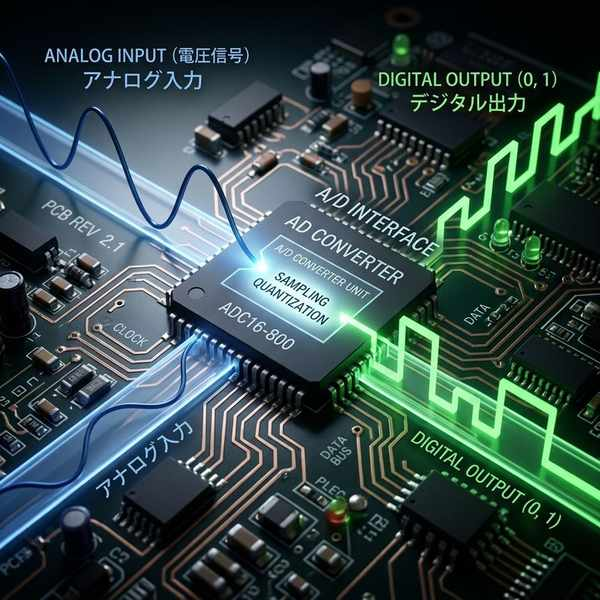
橋渡しを行う「インタフェース」
🔥 定期テスト対策・暗記のコツ
① 5大装置とCPUの引っ掛け
「CPU」は制御装置と演算装置が一緒になったものです。記憶装置（メモリやHDD）はCPUには含まれません！この違いは非常によくテストに出ます。
② IPアドレス と 通信プロトコル
「IPアドレス ➔ ネットワーク上の住所（識別番号）」「通信プロトコル ➔ データの送受信における共通ルール（約束事）」。言葉の定義を正確に覚えておきましょう。
③ 計測制御の「センサ」「アクチュエータ」
「センサ ➔ 情報を入力する（温度などを測る）」「アクチュエータ ➔ 情報を出力する（実際に動かす）」という関係をイメージしておくと、機器の分類問題も簡単に解けます！